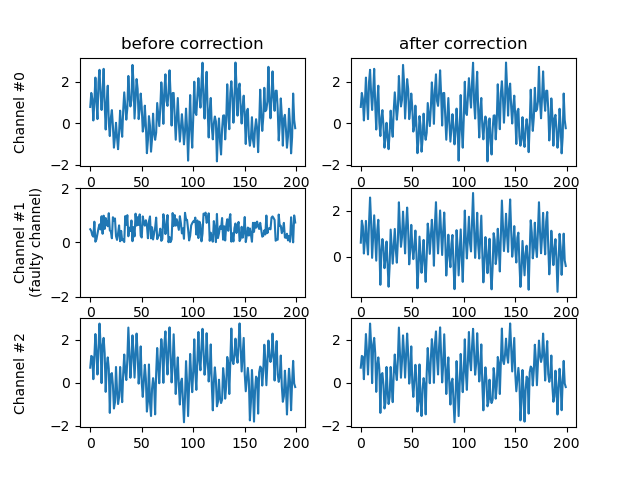

Channel restoration#
- cleansing.channel_restoration.run(data, ch_names, bad_ch_idx_list)#
Restores channel by averaging signals from their respective neighbors. In case neighboring channels are flagged as bad, channels get iteratively restored, from the channel with the most valid neighbors to the channel with the least. Restored channels are considered valid candidates for channel reconstruction.
- Parameters
data – Input data in the format channels x samples.
ch_names – Names of the channles from the input data. Order needs to be aligned with the channel order of ch_names.
bad_ch_idx_list – List of bad channels with are selected for substitution by their neighbors.
- Returns
Restored channels in the format channels x samples.
The following code example shows how to apply bad channel identification & subsequent restoration.
import numpy as np
import random
import matplotlib
matplotlib.use("Qt5agg")
import matplotlib.pyplot as plt
import finn.cleansing.bad_channel_identification as bci
import finn.cleansing.channel_restoration as cr
def main():
#Configure sample data
channel_count = 64
frequency = [random.randint(5, 50) for _ in range(channel_count)]
data_range = np.arange(0, 10000)
frequency_sampling = 200
ch_names = ['O1', 'Oz', 'O2', 'PO9', 'PO7', 'PO3', 'POz', 'PO4', 'PO8', 'PO10', 'P9', 'P7', 'P5', 'P3', 'P1', 'Pz', 'P2', 'P4', 'P6', 'P8', 'P10',
'TP9', 'TP7', 'CP5', 'CP3', 'CP1', 'CPz', 'CP2', 'CP4', 'CP6', 'TP8', 'TP10', 'T9', 'T7', 'C5', 'C3', 'C1', 'Cz', 'C2', 'C4', 'C6', 'T8', 'T10',
'FT9', 'FT7', 'FC5', 'FC3', 'FC1', 'FCz', 'FC2', 'FC4', 'FC6', 'FT8', 'FT10', 'F9', 'F7', 'F5', 'F3', 'F1', 'Fz', 'F2', 'F4', 'F6', 'F8', 'F10',
'AF9', 'AF7', 'AF3', 'AFz', 'AF4', 'AF8', 'AF10', 'Fp1', 'Fpz', 'Fp2']
#Configure noise data
frequency_noise = 50
shared_noise_strength = 1
random_noise_strength = 1
#Configure bad channel
bad_channel_idx = 1
bad_channel_signal_power = 1.1
#Generate some sample data
raw_data = [None for _ in range(channel_count)]
for channel_idx in range(channel_count):
genuine_signal = np.sin(2 * np.pi * frequency[channel_idx] * data_range / frequency_sampling)
shared_noise_signal = np.sin(2 * np.pi * frequency_noise * data_range / frequency_sampling) * shared_noise_strength
random_noise_signal = np.random.random(len(data_range)) * random_noise_strength
raw_data[channel_idx] = genuine_signal + shared_noise_signal + random_noise_signal
raw_data[bad_channel_idx] = np.random.random(len(data_range)) * bad_channel_signal_power
#raw_data = np.asarray(raw_data)
#Faulty channel gets identified
(_, invalid_list, _) = bci.run(raw_data, ch_names, [frequency_sampling for _ in range(channel_count)], [[60, 100]], broadness = 3, visual_inspection = True)
#Faulty channel gets substituted via neighbors
rest_data = cr.run(raw_data, ch_names, invalid_list)
#visualization
channels_to_plot = 3
(_, axes) = plt.subplots(channels_to_plot, 2)
for channel_idx in range(channels_to_plot):
axes[channel_idx, 0].plot(raw_data[channel_idx][:200])
axes[channel_idx, 1].plot(rest_data[channel_idx][:200])
axes[0, 0].set_title("before correction")
axes[0, 1].set_title("after correction")
axes[0, 0].set_ylabel("Channel #0\n"); axes[0, 0].set_yticks([-2, 0, 2])
axes[1, 0].set_ylabel("Channel #1\n(faulty channel)"); axes[1, 0].set_yticks([-2, 0, 2])
axes[2, 0].set_ylabel("Channel #2\n"); axes[2, 0].set_yticks([-2, 0, 2])
plt.show()
main()
Having identified bad channels, those got restored by averaging activity from their neighbors.
